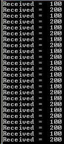
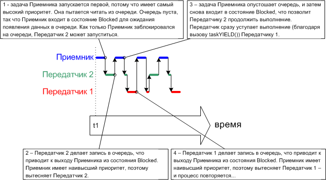
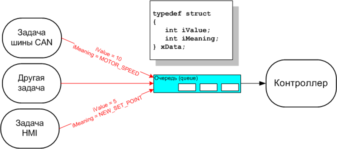
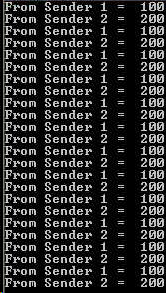
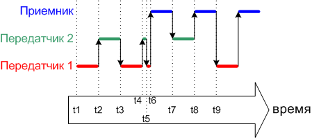

|
FreeRTOS: практическое применение, часть 2 (управление очередями) |
· Как создавать очередь.
· Как очередь управляет данными, которые в ней содержатся.
· Как данные посылаются (помещаются) в очередь.
· Как данные принимают (получают) из очереди.
· Что такое блокировка на очереди.
· Какой эффект оказывают приоритеты задачи при записи в очередь и чтении из очереди.
2.2. Характеристики очереди
Хранилище данных (Data Storage)
Очередь может хранить в себе конечное количество элементов данных фиксированного размера. Максимальное количество элементов, которое может хранить очередь, называют длиной (length) очереди. При создании очереди указывают совместно длину очереди и размер каждого элемента данных.
Обычно очереди работают как буфер по принципу 'первый вошел - первый вышел' (FIFO, First In First Out), где данные записываются в конец (в хвост) очереди, а считываются и удаляются из начала (из головы) очереди. Также можно записывать данные и в начало очереди.
Запись в буфер вызывает побайтовое копирование данных, которые должны быть сохранены в самой очереди. Чтение данных из очереди вызывает также копирование данных из очереди, при этом данные из очереди удаляются. На рисунке 19 показана запись данных в очередь и чтение данных из очереди, и эффект сохранения данных в очереди для каждой операции.


Рис. 19. Пример последовательности записи в очередь и чтения из очереди
Доступ к очереди для нескольких задач
Очереди являются объектами со своими собственными правами, которыми не владеют любые отдельные задачи, и эти права не могут быть установлены никакими задачами. Любое количество задач может записывать данные в одну и ту же очередь, и любое количество задач может читать данные из одной и той же очереди. Ситуация, когда в одну очередь пишут данные несколько задач вполне обычна. Однако очень редко бывает, что из одной очереди читают данные несколько задач.
Блокировка на чтение очереди
Когда задача делает попытку чтения из очереди, она (задача) может указать опционально время блокировки. Это время, в течение которого задача должна находиться в состоянии Blocked при ожидании появления данных в очереди, если пока очередь пуста. Задача, ожидающая появления данных в очереди, немедленно переходит из состояния Blocked в состояние Ready, когда другая задача или прерывание помещает данные в очередь. Также задача автоматически переходит из состояния Blocked в состояние Ready, если истекло время блокировки, а данные в очереди к этому моменту так и не появились.
Очереди могут иметь несколько читающих задач, так что возможна ситуация, когда на одной очереди имеется более одной задачи, ожидающей появления данных в режиме Blocked. В этом случае только одна задача будет разблокирована, когда данные наконец поступят. Эта разблокированная задача будет иметь наивысший приоритет из всех задач, ожидающих данные. Если блокированные (ожидающие данные) задачи имеют одинаковый приоритет, то будет разблокирована задача, которая дольше всех ждет данные.
Блокировка на записи очереди
Точно так же, как и при чтении из очереди, задача может указать (что также необязательно) время блокировки для записи в очередь. В этом случае это время блокировки соответствует максимальному времени, в котором задача должна удерживаться в состоянии Blocked при ожидании появления свободного места в очереди, если очередь уже полностью заполнена.
У очередей может быть несколько записывающих в них задач, с возможной блокировкой более чем одной задачи на ожидании завершения операции записи. В этом случае только одна задача будет разблокирована, когда появится свободное место в очереди. Задача, которая при этом разблокируется, будет иметь самый высокий приоритет среди всех задач, ожидающих появления свободного места. Если заблокированные задачи имеют равный приоритет, то разблокируется та задача, которая дольше всех задач ждет разблокировки.
2.3. Использование очереди
API функция xQueueCreate()
Очередь перед использованием должна быть явно создана.
Обращение к очереди происходит через переменную типа xQueueHandle. Функция xQueueCreate() используется для создания очереди и возвращает xQueueHandle в качестве ссылки на созданную очередь.
Для создания очереди FreeRTOS выделяет память RAM из кучи (heap). RAM используется как для структур данных очереди, так и для элементов, которые будут помещены в очередь или считаны из неё. В случае нехватки памяти в heap RAM функция xQueueCreate() при попытке создания очереди вернет NULL. Часть 5 более подробно рассматривает управление памятью heap.
Прототип API функции xQueueCreate():
xQueueHandle xQueueCreate( unsigned portBASE_TYPE uxQueueLength,
unsigned portBASE_TYPE uxItemSize);
Параметры и значение возврата функции xQueueCreate():
|
Имя параметра |
Описание |
|
uxQueueLength |
Максимальное количество элементов, которое можно сохранить в очереди в любой момент времени. |
|
uxItemSize |
Размер в байтах каждого элемента данных, который можно сохранить в очереди. |
|
возвращаемое значение |
Если функция вернула не NULL, то значит очередь создана успешно. Возвращенная величина в этом случае должна быть сохранена как хендл к созданной очереди. |
API функции xQueueSendToBack() и xQueueSendToFront()
Как и можно ожидать, xQueueSendToBack() используется для отправки данных в конец (хвост) очереди, а xQueueSendToFront() используется для отправки данных в начало (голову) очереди.
Функция xQueueSend() эквивалентна и полностью та же самая, что и xQueueSendToBack().
Никогда не делайте вызов xQueueSendToFront() или xQueueSendToBack() из процедуры обработчика прерывания (ISR, Interrupt Service Routine). Вместо этого должны использоваться защищенные версии xQueueSendToFrontFromISR() и xQueueSendToBackFromISR(). Они описаны в части 3.
Прототип API функции xQueueSendToFront():
portBASE_TYPE xQueueSendToFront( xQueueHandle xQueue,
const void * pvItemToQueue,
portTickType xTicksToWait );
Прототип API функции xQueueSendToBack():
portBASE_TYPE xQueueSendToBack( xQueueHandle xQueue,
const void * pvItemToQueue,
portTickType xTicksToWait );
Параметры и значение возврата функций xQueueSendToFront() и xQueueSendToBack().
|
Имя параметра |
Описание |
|
xQueue |
Хендл очереди, в которую данные посылаются (записываются). Хендл очереди берут из значения, которое вернула функция xQueueCreate() при создании очереди. |
|
pvItemToQueue |
Указатель на данные, которые копируются в очередь. |
|
xTicksToWait |
Максимальное количество времени, в течение которого задача должна оставаться в состоянии Blocked в ожидании, пока не появится в очереди свободное место для записи (если очередь уже заполнена). Обе функции и xQueueSendToFront(), и xQueueSendToBack() сделают возврат немедленно, если xTicksToWait указан 0 и если очередь уже заполнена. Время блокировки указывается в периодах тика, поэтому абсолютное время ожидания зависит от частоты следования тиков. Для преобразования времени в миллисекундах во время в тиках может использоваться константа portTICK_RATE_MS. Установка xTicksToWait в значение portMAX_DELAY приведет к тому, что задача будет ждать бесконечно (таймаута разблокировки не будет), что обеспечивается установкой в 1 значения INCLUDE_vTaskSuspend в файле FreeRTOSConfig.h. |
|
возвращаемое значение |
Возможны две величины возврата: 1. pdPASS - вернется только тогда, когда данные успешно отправлены в очередь. Если указано время блокировки (xTicksToWait было не равным 0), то возможно что вызвавшая функцию задача помещается в состояние Blocked для ожидания появления свободного места в очереди. В этом случае значение pdPASS будет возвращено, если в очереди появилось свободное место до истечения времени блокировки. 2. errQUEUE_FULL - будет возвращено, если данные не были записаны в очередь, так как очередь уже полностью заполнена. Если указано время блокировки (xTicksToWait было не равным 0), то вызвавшая функцию задача была помещена в состояние Blocked для ожидания, пока другая задача или обработчик прерывания освободят место в очереди, но указанное время блокировки истекло, а свободное место в очереди так и не появилось. |
API функции xQueueReceive() и xQueuePeek()
Функция xQueueReceive() используется для приема (чтения) элемента из очереди. При этом принятый элемент удаляется из очереди.
Функция xQueuePeek() используется для приема элемента из очереди без удаления элемента из очереди. Функция xQueuePeek() читает элемент из головы очереди без модификации данных, которые сохранены в очереди или, другими словами, без модификации порядка сохраненных данных в очереди (состояние очереди остается неизменным).
Никогда не делайте вызов xQueueReceive() или xQueuePeek() из процедуры обработчика прерывания (ISR, Interrupt Service Routine). Защищенная версия xQueueReceiveFromISR() описана в части 3.
Прототипы API функций xQueueReceive() и xQueuePeek():
portBASE_TYPE xQueueReceive( xQueueHandle xQueue,
const void * pvBuffer,
portTickType xTicksToWait );
portBASE_TYPE xQueuePeek ( xQueueHandle xQueue,
const void * pvBuffer,
portTickType xTicksToWait );
Параметры и значение возврата функций xQueueReceive() и xQueuePeek():
|
Имя параметра |
Описание |
|
xQueue |
Хендл очереди, из которой данные принимаются (читаются). Хендл очереди берут из значения, которое вернула функция xQueueCreate() при создании очереди. |
|
pvBuffer |
Указатель на память, куда будут копироваться принятые из очереди данные. Размер каждого элемента данных (в байтах), которые хранит очередь, устанавливается при создании очереди. Память, на которую указывает pvBuffer, должна быть в байтах объемом не меньше размера одного элемента данных. |
|
xTicksToWait |
Максимальное количество времени, в течение которого задача должна оставаться в состоянии Blocked в ожидании, пока не появится в очереди доступный для чтения элемент данных (если очередь уже пуста). Обе функции и xQueueReceive(), и xQueuePeek() сделают возврат немедленно, если xTicksToWait указан 0 и если очередь уже пуста. Время блокировки указывается в периодах тика, поэтому абсолютное время ожидания зависит от частоты следования тиков. Для преобразования времени в миллисекундах во время в тиках может использоваться константа portTICK_RATE_MS. Установка xTicksToWait в значение portMAX_DELAY приведет к тому, что задача будет ждать бесконечно (таймаута разблокировки не будет), что обеспечивается установкой в 1 значения INCLUDE_vTaskSuspend в файле FreeRTOSConfig.h. |
|
возвращаемое значение |
Возможны две величины возврата: 1. pdPASS - вернется только тогда, когда данные успешно прочитаны из очереди. Если указано время блокировки (xTicksToWait было не равным 0), то возможно что вызвавшая функцию задача помещается в состояние Blocked для ожидания появления доступного элемента данных в очереди. В этом случае значение pdPASS будет возвращено, если в очереди появился элемент до истечения времени блокировки. 2. errQUEUE_EMPTY - будет возвращено, если данные не были прочитаны из очереди, так как очередь уже пуста. Если указано время блокировки (xTicksToWait было не равным 0), то вызвавшая функцию задача была помещена в состояние Blocked для ожидания, пока другая задача или обработчик прерывания не запишут что-нибудь в очередь, но указанное время блокировки истекло, а доступный для чтения элемент в очереди так и не появился. |
API функция uxQueueMessagesWaiting()
Функция uxQueueMessagesWaiting() используется для опроса очереди на количество содержащихся в ней сейчас элементов.
Никогда не вызывайте uxQueueMessagesWaiting() из процедуры обработчика прерывания (ISR, Interrupt Service Routine). Вместо этого должна использоваться защищенная версия uxQueueMessagesWaitingFromISR().
Прототип API функции uxQueueMessagesWaiting():
unsigned portBASE_TYPE uxQueueMessagesWaiting( xQueueHandle xQueue );
Параметры и значение возврата функции uxQueueMessagesWaiting():
|
Имя параметра |
Описание |
|
xQueue |
Хендл очереди, которая опрашивается. Хендл очереди берут из значения, которое вернула функция xQueueCreate() при создании очереди. |
|
возвращаемое значение |
Количество элементов, которые сейчас находятся на хранении в очереди. Если функция вернула 0, то очередь пуста. |
Пример 10. Блокировка на приеме из очереди
Этот пример демонстрирует создание очереди, отправку данных в очередь из нескольких задач и прием данных из очереди одной задачей. Очередь создается для размещения в себе данных типа long. Задачи, которые отправляют данные в очередь, не указывают при этом время блокировки, а задача, которая принимает данные из очереди, указывает время блокировки.
Приоритет задач, отправляющих данные в очередь, меньше, чем приоритет задачи, которая эти данные из очереди принимает. Это означает, что очередь никогда не будет содержать в себе более одного элемента данных, потому что как только данные будут отправлены в очередь, то сразу будет разблокирована принимающая данные задача, вытеснит задачу, поместившую данные в очередь, и удалит данные из очереди - очередь снова сразу станет пустой.
Листинг 34 показывает реализацию задачи, которая записывает в очередь. Будут созданы два экземпляра этой задачи, один из которых будет постоянно записывать в очередь значение 100, а другой будет постоянно записывать в ту же самую очередь значение 200. Параметр задачи используется для того, чтобы передать каждому экземпляру задачи эти значения.
Листинг 34. Реализация передающей задачи, используемой в примере 10
static void vSenderTask( void *pvParameters )
{
long lValueToSend;
portBASE_TYPE xStatus;
/* Будут созданы два экземпляра этой задачи, а величина, посылаемая
в очередь, будет передана в задачу через параметр задачи - благодаря
этому каждый экземпляр задачи будет использовать свое значение.
Очередь была создана для сохранения в себе значений с типом long, и
здесь делается приведение типа данных к требуемому. */
lValueToSend = ( long ) pvParameters;
/* Как и большинство других задач, эта задача реализована как
бесконечный цикл. */
for( ;; )
{
/* Отправка значения в очередь.
Первый параметр определяет очередь, в которую отправляются данные.
Очередь была создана до запуска шедулера, поэтому создание очереди
было до начала выполнения этой задачи.
Второй параметр - адрес посылаемых данных, в нашем случае это будет
адрес локальной переменной lValueToSend.
Третий параметр время блокировки – время, в котором задача должна
удерживаться в состоянии Blocked для ожидания появления свободного
места в очереди, если очередь уже полностью заполнена. В этом случае
время блокировки не указано, потому что по выбранному алгоритму работы
приложения очередь никода не будет содержать больше одного элемента
данных, и поэтому никогда не переполнится. */
xStatus = xQueueSendToBack( xQueue, &lValueToSend, 0 );
if( xStatus != pdPASS )
{
/* Операция отправки не завершена, потому что очередь была заполнена -
это должно означать ошибку, так как в нашем случае очередь никогда
не будет содержать больше одного элемента данных! */
vPrintString( "Could not send to the queue.\r\n" );
}
/* Разрешение выполняться для других задач, отправляющих данные
в очередь. Вызов taskYIELD() информирует шедулер, что сейчас сразу
нужно переключиться к другой задаче, а не поддерживать эту задачу в
состоянии Running до окончания текущего слайса времени. */
taskYIELD();
}
}
В листинге 35 показана реализация задачи, которая принимает данные из очереди. Принимающая задача указывает время блокировки 100 миллисекунд, на которые она войдет в состояние Blocked, пока либо данные не появятся в очереди, либо не истекут 100 миллисекунд таймаута без появления данных. В нашем примере таймаут 100 миллисекунд никогда не произойдет, так как две задачи постоянно записывают данные в очередь.
Листинг 35. Реализация принимающей задачи, используемой в примере 10:
static void vReceiverTask( void *pvParameters )
{
/* Декларирование переменной, которая будет хранить значения, принятые
из очереди. */
long lReceivedValue;
portBASE_TYPE xStatus;
const portTickType xTicksToWait = 100 / portTICK_RATE_MS;
/* Эта задача также определена как бесконечный цикл. */
for( ;; )
{
/* Этот опрос очереди всегда должен определять, что очередь пуста, потому
что эта задача будет немедленно удалять данные из очереди, которые туда
были только что записаны. */
if( uxQueueMessagesWaiting( xQueue ) != 0 )
{
//Печать "Очередь должна была быть пустой!"
vPrintString( "Queue should have been empty!\r\n" );
}
/* Прием данных из очереди.
Первый параметр определяет очередь, из которой данные будут прочитаны.
Очередь была создана перед запуском шедулера, и поэтому перед тем,
как эта задача запустится в первый раз.
Второй параметр - адрес буфера, в который принятые данные будут
помещены. В нашем случае здесь просто указан адрес переменной,
которая имеет нужный размер, чтобы удержать в себе принятые данные.
Последний параметр время блокировки – максимальное время, в котором
задача должна оставаться в состоянии Blocked, ожидая появления
данных на очереди. Здесь используется константа portTICK_RATE_MS
для преобразования 100 миллисекунд во время, указанное в тиках. */
xStatus = xQueueReceive( xQueue, &lReceivedValue, xTicksToWait );
if( xStatus == pdPASS )
{
/* Данные успешно приняты из очереди, печать принятого значения. */
vPrintStringAndNumber( "Received = ", lReceivedValue );
}
else
{
/* Данные не были приняты из очереди даже после ожидания 100 мс.
Это должно означать ошибку, так как отправляющие данные в очередь
задачи работают постоянно записывают данные в очередь. */
vPrintString( "Could not receive from the queue.\r\n" );
}
}
}
Листинг 36 содержит код для функции main(). Она просто создает очередь и три задачи перед запуском шедулера. Очередь создается для удержания в себе максимум 5 значений чисел типа long, с запасом - даже с учетом того, что приоритеты задач настроены так, что очередь никогда не будет содержать в себе больше одного элемента в любой момент времени.
Листинг 36. Реализация функции main() примера 10:
/* Декларирование переменной типа xQueueHandle. Она используется для сохранения
ссылки на очередь, к которой будут обращаться все три задачи. */
xQueueHandle xQueue;
int main( void )
{
/* Очередь создается для удержания в себе до 5 элементов включительно, каждый
из элементов настолько велик, что его размер достаточен для хранения типа
long. */
xQueue = xQueueCreate( 5, sizeof( long ) );
if( xQueue != NULL )
{
/* Создание двух экземпляров задач, которые будут отправлять данные
в очередь. Параметр задачи используется для передачи значения,
которое будет писаться задачей в очередь, так что одна задача
будет постоянно записывать в очередь число 100, а другая задача
будет постоянно записывать число 200. Обе задачи создаются
с одинаковым приоритетом 1. */
xTaskCreate( vSenderTask, "Sender1", 1000, ( void * ) 100, 1, NULL );
xTaskCreate( vSenderTask, "Sender2", 1000, ( void * ) 200, 1, NULL );
/* Создание задачи, которая будет читать из очереди. Задача создается
с приоритетом 2, что выше приоритета задач, помещающих данные
в очередь. */
xTaskCreate( vReceiverTask, "Receiver", 1000, NULL, 2, NULL );
/* Запуск шедулера, после чего созданные задачи начнут выполняться. */
vTaskStartScheduler();
}
else
{
/* Очередь не может быть создана. */
}
/* Если все хорошо, то управление в main() никогда не дойдет до этой точки,
и теперь шедулер будет управлять задачами. Если main() довела управление
до этого места, то это может означать, что не хватает памяти кучи (heap)
для создания специальной задачи ожидания (idle task, об этой задаче
далее). Часть 5 предоставляет больше информации по управлению памятью. */
for( ;; );
}
Задачи, которые отправляют данные в очередь, делают вызовы taskYIELD() при каждой итерации в своем бесконечном цикле. Функция taskYIELD() информирует шедулер, что сейчас немедленно нужно переключиться на другую задачу и не оставлять текущую задачу в состоянии Running до окончания текущего слайса времени. Задача, которая вызвала taskYIELD(), предлагает сразу удалить себя из состояния Running. Обе задачи, которые отправляют данные в очередь, имеют одинаковый приоритет, и каждый раз при вызове taskYIELD() переходят из состояния Running в состояние Ready, давая другой отправляющей задаче (которая уже в состоянии Ready, и ждет в этом состоянии дольше) возможность войти в состояние Running. Поэтому две задачи передают данные поочередно - то одна, то другая. Вывод, производимый примером 10, показан ниже.

Рис. 21. Вывод, который производит при выполнении пример 10.
Рисунок 22 показывает последовательность выполнения задач.

Рис. 22. Последовательность выполнения примера 10.
Использование очередей для передачи составных типов данных
Обычным случаем является прием в одной задаче (приемник) данных от нескольких других задач (передатчиков) через одну и ту же очередь. Часто приемнику данных нужно знать, откуда пришли данные, чтобы он мог определить, как их следует обработать. Простейший способ достичь этого - использовать очередь для передачи структур, где будут сохранены как сами данные, так и информация об источнике данных, содержащаяся в одном из полей структуры. Эта схема демонстрируется на рисунке 23.

Рис. 23. Пример сценария, в котором через очередь передаются структуры.
Описание процесса на рисунке 23:
· Создается очередь для удержание в себе структур типа xData. Поля структуры содержат значение данных (iValue), и код (iMeaning), показывающий, что означают данные, которые отправляются на очередь в одном сообщении.
· Центральная задача Контроллер используется для реализации главного функционала системы. Он заключается в реагировании на входы и изменении состояния системы в соответствии с информацией, переданной через очередь.
· Задача шины CAN используется для инкапсулирования в себе функционала интерфейса шины CAN. Когда задача шины CAN принимает и декодирует сообщение, она посылает это сообщение задаче Контроллер в декодированной форме, как данные структуры xData. Поле iMeaning передаваемой через очередь структуры используется для указания задаче Контроллер о том, что из себя представляют данные - в рассмотренном примере это скорость мотора. Поле iValue передаваемой структуры используется задачей Контроллер как данные о необходимой скорости мотора.
· Задача HMI (Human Machine Interface, интерфейс человек-машина) используется для инкапсуляции в себе функционала общения с человеком. Оператор машины может вводить команды и запрашивать значения разными способами, что детектируется и интерпретируется задачей HMI. Когда поступает новая команда на вход задачи HMI, то она посылает её задаче Контроллер в структуре xData. Как обычно, в поле iMeaning передаваемой структуры закодирован смысл команды, чтобы задача Контроллер могла знать, что из себя представляют данные - в рассмотренном примере это установка нового положения точки позиционирования. В поле iValue передаваемой структуры закодировано значение установки точки.
Пример 11. Блокировка при отправке в очередь / отправка структур через очередь
Пример 11 очень похож на пример 10, но приоритеты задачи изменены, так что принимающая задача имеет приоритет, меньший чем приоритет отправляющих задач. Кроме того, теперь очередь используется для передачи структур между задачами, а не простых целых чисел типа long.
Листинг 37. Определение структуры, которая передается через очередь, плюс декларация двух переменных для использования в примере.
/* Определение типа для структуры, которая будет передаваться через очередь. */
typedef struct
{
unsigned char ucValue;
unsigned char ucSource;
} xData;
/* Определение двух переменных, имеющих тип xData. Эти переменные
будут передаваться через очередь. */
static const xData xStructsToSend[ 2 ] =
{
{ 100, mainSENDER_1 }, /* Используется Sender1 (передатчик 1). */
{ 200, mainSENDER_2 } /* Используется Sender2 (передатчик 2). */
};
В примере 10 принимающая задача имеет самый высший приоритет, поэтому в очереди не может никогда содержаться больше одного элемента. Так происходит потому, что принимающая задача (приемник) сразу вытесняет отправляющие задачи (передатчик 1 и 2), как только они поместят данные в очередь. В примере 11 отправляющие задачи имеют наивысший приоритет, поэтому очередь обычно всегда переполнена. Понятно почему - принимающая данные задача всегда вытесняется передатчиками, как только в буфере появилось хотя бы одно свободное место, и буфер сразу снова заполняется. При этом отправляющие задачи снова входят в режим Blocked и снова ждут появления свободного места в очереди.
В листинге 38 показана реализация передающей задачи. Передающая задача указывает время своей блокировки 100 миллисекунд, на которые она входит в режим блокировки для ожидания появления места в буфере - когда очередь становится заполненной. Она покидает состояние блокировки (Blocked), когда либо появится свободное место в очереди, либо когда пройдет время 100 миллисекунд. В этом примере таймаут 100 мс никогда не истекает, так как принимающая задача постоянно освобождает место, удаляя элементы данных из очереди.
static void vSenderTask( void *pvParameters )
{
portBASE_TYPE xStatus;
const portTickType xTicksToWait = 100 / portTICK_RATE_MS;
/* Как и большинство других задач, эта задача реализована как бесконечный
цикл. */
for( ;; )
{
/* Отправка в очередь.
Второй параметр - адрес отправляемой структуры. Адрес передается
как параметр задачи, для чего напрямую используется pvParameters.
Третий параметр время блокировки - время, которое задача должна быть
в состоянии Blocked, ожидая появления доступного места на очереди,
если очередь уже полна. Время блокировки указано потому, что
отправляющие задачи имеют более высокий приоритет, чем принимающая
задача, так что ожидается, что очередь сразу заполнится. Принимающая
задача будет запускаться и удалять элементы данных из очереди, когда
обе отправляющие задачи находятся в состоянии Blocked. */
xStatus = xQueueSendToBack( xQueue, pvParameters, xTicksToWait );
if( xStatus != pdPASS )
{
/* Операция отправки не завершена, даже после истечения 100 мс.
Это должно означать ошибку, так как принимающая задача должна
освобождать место в очереди, как только обе отправляющие задачи
войдут в состояние Blocked. */
vPrintString( "Could not send to the queue.\r\n" );
}
/* Разрешаем выполниться другой такой же задаче, отправляющей данные
в очередь. */
taskYIELD();
}
}
Принимающая задача имеет самый низкий приоритет, поэтому она запускается только тогда, когда обе отправляющие задачи находятся в состоянии Blocked. Отправляющие задачи будут в этом состоянии Blocked только тогда, когда очередь заполнится, так что принимающая задача запустится, когда очередь уже полна. Таким образом подразумевается, что принимаемые данные для принимающей задачи есть всегда, так что нет необходимости указания времени блокировки принимающей задачи.
Листинг 39. Реализация принимающей задачи для примера 11
static void vReceiverTask( void *pvParameters )
{
/* Декларирование переменной - структуры, которая будет хранить значения,
принятые из очереди. */
xData xReceivedStructure;
portBASE_TYPE xStatus;
/* Эта задача также определена как бесконечный цикл. */
for( ;; )
{
/* Так как эта задача имеет самый низкий приоритет, она работает только
когда отправляющие задачи находятся в состоянии Blocked. Отправляющие
задачи войдут в состояние Blocked, когда очередь станет заполненной,
так что эта задача всегда подразумевает, что в очереди есть элементы
данных, количество которых равно длине очереди. Для нашего примера
это количество равно 3. */
if( uxQueueMessagesWaiting( xQueue ) != 3 )
{
vPrintString( "Queue should have been full!\r\n" );
}
/* Прием из очереди.
Второй параметр - буфер, в который будут помещены принятые из очереди
данные. В нашем случае буфер - это просто адрес переменной, которая
имеет требуемый размер для удержания данных принятой структуры.
Последний параметр - лимит времени, в котором задача остается
в состоянии Blocked при ожидании появления данных в очереди,
если она пуста. Для нашего случая время блокировки не требуется,
потому что эта задача будет запущена только тогда, когда очередь
вся заполнена данными. */
xStatus = xQueueReceive( xQueue, &xReceivedStructure, 0 );
if( xStatus == pdPASS )
{
/* Данные были успешно приняты из очереди, вывод принятого значения
и источника этого значения. */
if( xReceivedStructure.ucSource == mainSENDER_1 )
{
vPrintStringAndNumber( "From Sender 1 = ", xReceivedStructure.ucValue );
}
else
{
vPrintStringAndNumber( "From Sender 2 = ", xReceivedStructure.ucValue );
}
}
else
{
/* Из очереди ничего не принято. Это должно означать ошибку, так как
эта задача может быть запущена только при заполненной очереди. */
vPrintString( "Could not receive from the queue.\r\n" );
}
}
}
Функция main() примера 11 (по сравнению с предыдущим примером 10) почти не изменилась. Очередь создается для удержания трех структур xData, порядок приоритетов и изменен на обратный. Реализация main() показана в листинге 40.
int main( void )
{
/* Очередь создается для удержания в себе максимум 3 элементов типа xData. */
xQueue = xQueueCreate( 3, sizeof( xData ) );
if( xQueue != NULL )
{
/* Создание двух экземпляров задач, которые будут отправлять данные
в очередь. Параметр задачи используется для передачи структуры,
которая будет писаться задачей в очередь, так что одна задача
будет постоянно записывать в очередь xStructsToSend[0], а другая
задача будет постоянно записывать xStructsToSend[1].
Обе задачи создаются с одинаковым приоритетом 2 (приоритет 2 выше,
чем у задачи-приемника). */
xTaskCreate( vSenderTask, "Sender1", 1000, &( xStructsToSend[ 0 ] ), 2, NULL );
xTaskCreate( vSenderTask, "Sender2", 1000, &( xStructsToSend[ 1 ] ), 2, NULL );
/* Создание задачи, которая будет читать из очереди. Задача создается
с приоритетом 1, что ниже приоритета задач, помещающих данные
в очередь. */
xTaskCreate( vReceiverTask, "Receiver", 1000, NULL, 1, NULL );
/* Запуск шедулера, после чего созданные задачи начнут выполняться. */
vTaskStartScheduler();
}
else
{
/* Очередь не может быть создана. */
}
/* Если все хорошо, то управление в main() никогда не дойдет до этой точки,
и теперь шедулер будет управлять задачами. Если main() довела управление
до этого места, то это может означать, что не хватает памяти кучи (heap)
для создания специальной задачи ожидания (idle task, об этой задаче
далее). Часть 5 предоставляет больше информации по управлению памятью. */
for( ;; );
}
В примере 11 точно так же, как и в примере 10, передающие задачи в бесконечном цикле, на каждой своей итерации отправляют данные в очередь и уступают возможность сделать тоже самое для другой задачи. Вывод, производимый примером 11, показан на рисунке 24.

Рисунок 25 демонстрирует последовательность выполнения, являющейся результатом того, что отправляющие задачи имеют приоритет выше, чем принимающая задача. Более подробно рисунок 25 описан в таблице 11.

Рис. 25. Последовательность выполнения примера 11
Таблица 11. Описание ключевых точек времени рисунка 25.
|
Время |
Описание |
|
t1 |
Задача передатчик 1 выполняется и отправляет данные на очередь. |
|
t2 |
Задача передатчик 1 уступает (вызовом taskYIELD()) выполнение задаче передатчик 2. |
|
t3 |
Теперь передатчик 2 уступает передатчику 1. Передатчик 1 записывает данные в очередь, и заполняет её полностью. |
|
t4 |
Передатчик 1 уступает выполнение Передатчику 2. |
|
t5 |
Передатчик 2 делает попытку записи в очередь. Поскольку очередь была полностью заполнена, то передатчик 2 входит в режим Blocked, ожидая появления свободного места в очереди, чем позволяет снова запуститься задаче передатчика 1. |
|
t6 |
Передатчик 1 также делает попытку записи в очередь. Поскольку очередь уже заполнена, передатчик также входит в состояние Blocked для ожидания появления свободного места в очереди. Теперь обе задачи передатчиков - и 1, и 2 - находятся в состоянии Blocked, благодаря чему задача приемника с более низким приоритетом имеет возможность запуститься. |
|
t7 |
Задача приемника удаляет один элемент xData из очереди. Как только в очереди появилось свободное место, передатчик 2 покидает состояние Blocked и, как задача с более высоким приоритетом, вытесняет задачу Приемник. Передатчик 2 пишет в очередь, чем снова заполняет свободное место в очереди, освобожденное приемником. Теперь очередь снова заполнена. Передатчик 2 делает вызов taskYIELD(), но передатчик 1 не выходит из состояния Blocked, поэтому передатчик 2 заново выбирается как задача с состоянием Running и продолжает выполнение после вызова taskYIELD(). |
|
t8 |
Возникает новая итерация цикла передатчика 2, и он снова делает попытку записи в очередь, и снова попадает в состояние Blocked, так как очередь заполнена. Снова начинает выполнение задача приемника, так как оба передатчика в состоянии Blocked. |
|
t9 |
Задача приемника удалила снова один элемент из очереди. Так как в очереди появилось свободное место, то передатчик 1 выходит из состояния Blocked (выходит именно передатчик 1, а не передатчик 2, так как передатчик 1 дольше всего ждет в состоянии Blocked, а приоритеты у передатчиков 1 и 2 одинаковые) и, как задача с самым высоким приоритетом, вытесняет задачу приемника. Передатчик 1 записывает в очередь, снова заполняет пустое место, созданное задачей приемника. Очередь снова полностью заполнена. Передатчик 1 делает вызов taskYIELD(), но передатчик 2 не выходит из состояния Blocked, поэтому передатчик 1 заново выбирается как задача с состоянием Running и продолжает выполнение после вызова taskYIELD(). Возникает новая итерация цикла передатчика 1, и он снова делает попытку записи в очередь, и снова попадает в состояние Blocked, так как очередь заполнена. |
Снова начинается выполнение задача приемника, так как оба передатчика в состоянии Blocked, и далее цикл продолжается.
2.4. Работа с большими объемами данных
Если сохраняемый в очереди размер данных велик, то выгоднее использовать очередь для передачи указателей на данные, в отличие от копий самих данных, так как иначе при побайтной пересылке данных в очередь и вычитывании данных из очереди повышаются накладные расходы ресурсов. Передача указателей более эффективна по затратам процессорного времени и требуемого RAM для создания очереди. Однако при применении указателей в очереди очень важно иметь в виду следующее:
1. Должен быть ясно определен владелец RAM, на которую настроены указатели.
Когда память используется совместно несколькими задачами, необходимо убедиться, что обе задачи не модифицируют содержимое памяти одновременно, или не предпринимают другие действия, которые могут привести к недостоверному содержимому памяти. Идеальный вариант - только передающей задаче разрешен доступ к памяти в процессе постановки в очередь указателя, и только принимающей задаче должен быть разрешен доступ к памяти после того как указатель был получен из очереди.
2. Указываемая указателями память RAM должна сохранять верное содержание.
Если память, на которую настроены указатели, была выделена динамически (malloc), то только одна задача должна отвечать за освобождение этой памяти. Ни одна из задач не должна делать попыток обращения к памяти после её освобождения.
Указатели никогда не должны использоваться для доступа к данным, размещенным в стеке задачи. Данные станут неправильными, как только окно стека будет изменено.